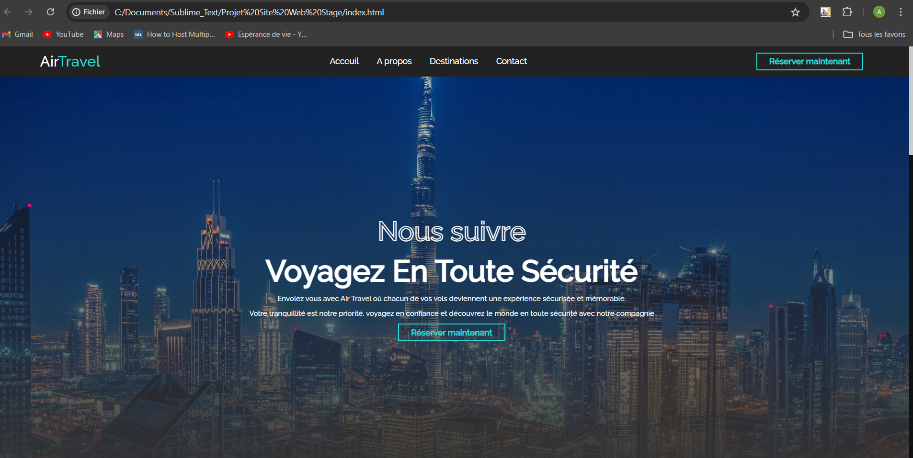

Mes Projets
Calculatrice en Java

Projet de calculatrice réalisé en Java avec Swing. Cette application permet d'effectuer les opérations de base : addition, soustraction, multiplication, division, mais aussi des calculs plus avancés comme la racine carrée, l'inverse, et le pourcentage. Gestion des erreurs intégrée pour les divisions par zéro et entrées invalides.
Technologies : Java, Swing
Voir le code sur GitHub
Mise en place de GLPI

Owncloud est un logiciel libre offrant une plateforme de services de stockage et partage de fichiers et d’applications diverses en ligne. Il est présenté comme une alternative au cloud public.
Technologies : GLPI, MySQL, PHP
Voir le code ou la procédure
Site Web ALUME

Création d’un site vitrine et e-commerce pour la société ALUME spécialisée dans la vente de fenêtres et produits de menuiserie. Le site permet aux clients de consulter les produits, de s’inscrire, passer des commandes, et pour les administrateurs de gérer l’ensemble des ressources.
Technologies : HTML, CSS, PHP, MySQL
Voir le code sur GitHub
Site Web AirTravel

Développement d'un site web pour la gestion de voyages et réservations AirTravel. Fonctionnalités principales : consultation des destinations, inscription des utilisateurs, réservations en ligne, et interface de gestion pour les administrateurs.
Technologies : HTML, CSS, PHP, MySQL
Voir le code sur GitHub